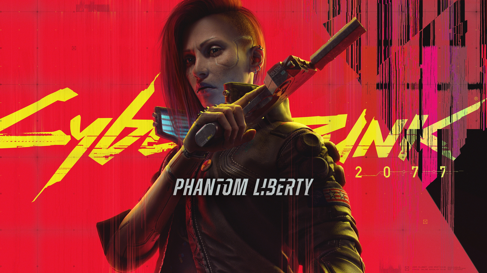
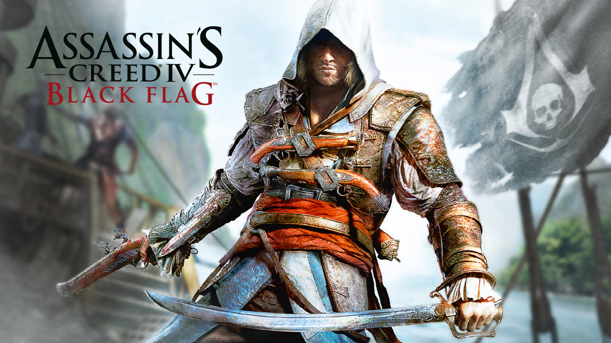
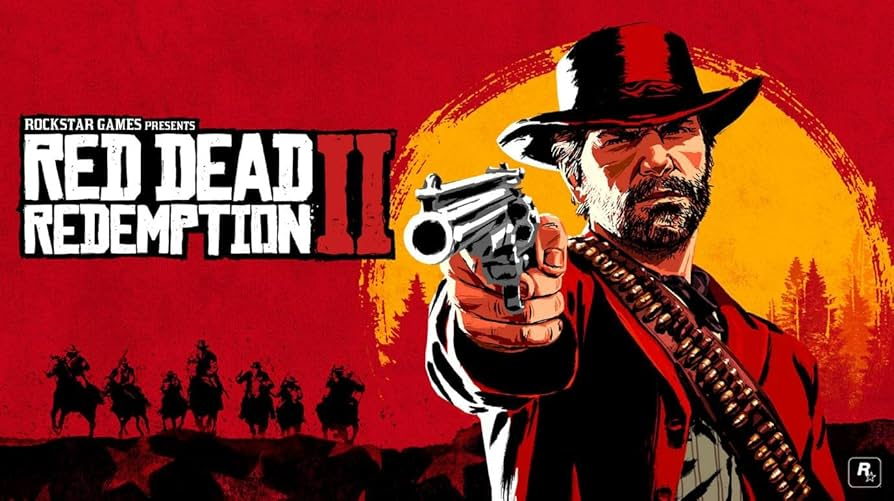

Jocurile mele preferate:
Cyberpunk 2077

Îmi place Cyberpunk 2077 pentru lumea lui mare și plină de lumini. Night City pare mereu în mișcare și descoperi lucruri noi la fiecare pas. Misiunile sunt variate, iar jocul îți dă libertate să alegi cum vrei să joci. Atmosfera modernă este, de asemenea, plăcută
Assassin's Creed IV

Black Flag îmi place fiindcă te lasă să explorezi marea și să conduci propria corabie. Luptele navale sunt simple, dar foarte plăcute, iar insulele au mereu ceva de explorat. Jocul îți dă o senzație de aventură și libertate care te face să vrei să joci fără oprire
Red Dead Redemption 2

La RDR2 mă prinde foarte tare modul în care totul pare real. Când intru într-un oraș, oamenii vorbesc între ei, mă salută, reacționează dacă fac ceva greșit. Îmi place mult și să explorez zonele din munți sau păduri ce oferă diverse oportunități. De asemenea, povestea lui Arthur este una impresionantă
God of War Ragnarok

La God of War Ragnarök îmi place cel mai mult felul în care jocul te plimbă prin lumi diferite, fiecare cu atmosfera ei. Simt că descopăr mereu ceva nou, fie un loc frumos, fie un personaj interesant. Povestea este spusă într-un ușor de urmărit, iar elementele din mitologie reprezintă partea mea preferată